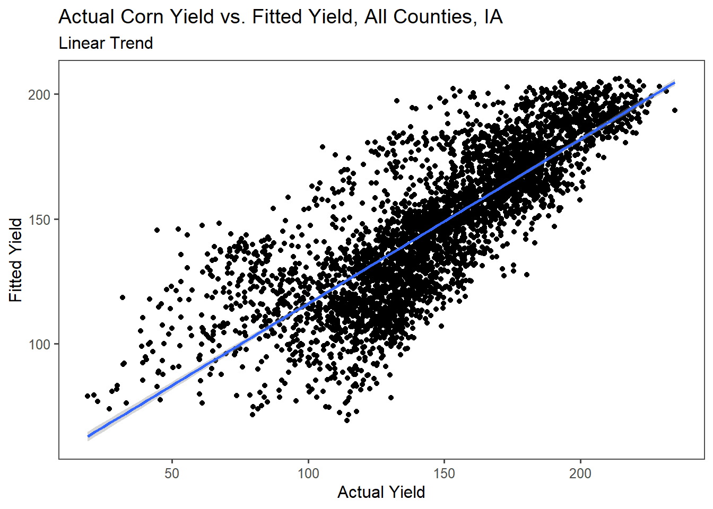

Chapter 5 Simple web scraping
R can read html using either rvest, xml, or xml2 packages. Here we are going to navigate to the Center for Snow and Avalance Studies Website and read a table in. This table contains links to data we want to programatically download for three sites. We don’t know much about these sites, but they contain incredibly rich snow, temperature, and precip data.
5.1 Reading an html
5.1.1 Extract CSV links from webpage
site_url <- 'https://snowstudies.org/archived-data/'
#Read the web url
webpage <- read_html(site_url)
#See if we can extract tables and get the data that way
tables <- webpage %>%
html_nodes('table') %>%
magrittr::extract2(3) %>%
html_table(fill = TRUE)
#That didn't work, so let's try a different approach
#Extract only weblinks and then the URLs!
links <- webpage %>%
html_nodes('a') %>%
.[grepl('24hr',.)] %>%
html_attr('href')5.2 Data Download
5.2.1 Download data in a for loop
splits <- str_split_fixed(links,'/',8)
dataset <- splits[,8]
file_names <- paste0('C:/Users/13074/Documents/ESS580/3_snow_functions_iteration/data',dataset)
for(i in 1:3){
download.file(links[i],destfile=file_names[i])
}
downloaded <- file.exists(file_names)
evaluate <- !all(downloaded)5.3 Data read-in
5.3.1 Read in just the snow data as a loop
snow_files <- file_names %>%
.[!grepl('SG_24',.)] %>%
.[!grepl('PTSP',.)]
#empty_data <- list()
# snow_data <- for(i in 1:length(snow_files)){
# empty_data[[i]] <- read_csv(snow_files[i]) %>%
# select(Year,DOY,Sno_Height_M)
# }
#snow_data_full <- do.call('rbind',empty_data)
#summary(snow_data_full)5.3.2 Read in the data as a map function
our_snow_reader <- function(file){
name = str_split_fixed(file,'/',7)[,7] %>%
gsub('_24hr.csv','',.) %>%
gsub('data', '',.)
df <- read_csv(file) %>%
select(Year,DOY,Sno_Height_M) %>%
mutate(site = name)
}
snow_data_full <- map_dfr(snow_files,our_snow_reader)## Rows: 6211 Columns: 52## -- Column specification --------------------------------------------------------
## Delimiter: ","
## dbl (52): ArrayID, Year, DOY, Hour, LoAir_Min_C, LoAir_Min_Time, LoAir_Max_C...##
## i Use `spec()` to retrieve the full column specification for this data.
## i Specify the column types or set `show_col_types = FALSE` to quiet this message.## Rows: 6575 Columns: 48## -- Column specification --------------------------------------------------------
## Delimiter: ","
## dbl (48): ArrayID, Year, DOY, Hour, LoAir_Min_C, LoAir_Min_Time, LoAir_Max_C...##
## i Use `spec()` to retrieve the full column specification for this data.
## i Specify the column types or set `show_col_types = FALSE` to quiet this message.#summary(snow_data_full)5.3.3 Plot snow data
snow_yearly <- snow_data_full %>%
group_by(Year,site) %>%
summarize(mean_height = mean(Sno_Height_M,na.rm=T))## `summarise()` has grouped output by 'Year'. You can override using the `.groups` argument.ggplot(snow_yearly,aes(x=Year,y=mean_height,color=site)) +
geom_point() +
ggthemes::theme_few() +
ggthemes::scale_color_few()## Warning: Removed 2 rows containing missing values (geom_point).